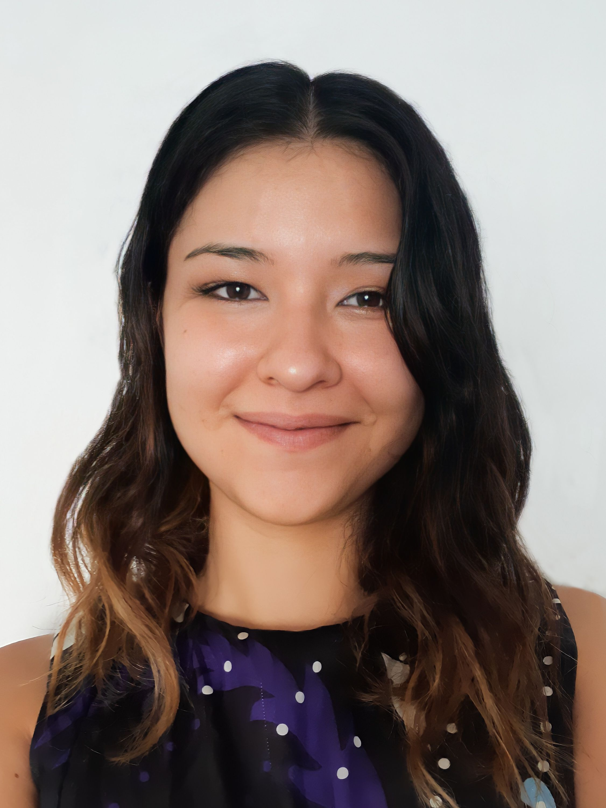

by Carolina Vidal
Mi nombre es Carolina, soy Diseñadora de Indumentaria y Asesora de Imagen. Nací en Resistencia, Chaco, y me
mudé a Buenos Aires en 2012 para estudiar en la UBA. Mientras recorría mi camino como estudiante de Diseño,
fui descubriendo que lo que más me apasionaba de la indumentaria no era el desarrollo de las prendas, sino su
impacto social, cultural y todo lo que pueden lograr en la persona que las viste.
Al terminar la carrera, comencé a formarme en Producción de Moda, junto a Maite Irazu, mientras trabajaba
asistiendo a Productoras en editoriales, desfiles y publicidad. Tiempo después y movida por mis constantes
ganas de seguir aprendiendo, estudié Asesoría de Imagen en la Escuela Argentina de Moda, descubriendo dentro
de ese universo una verdadera vocación.
Encontré en el análisis y desarrollo de la Imagen Personal la combinación perfecta entre rubros que siempre
me llamaron la atención: Comunicación, Creatividad y, por supuesto, Moda.
Encontrá tu mejor versión
El vestir es un acto cotidiano, muchas veces tachado de superficial, frívolo, vacío. Pero esta concepción no
podría estar más lejos de la realidad. La imagen es una herramienta muy poderosa, habla de nuestra forma de ser,
nuestros gustos, nuestros deseos, habla de quiénes somos. Pero el verdadero poder de la imagen no reside en el
afuera, sino en lo que puede generar en un@ mism@. Para desarrollar un estilo personal que nos identifique y nos
de seguridad, que nos haga sentir list@s para salir al mundo a romperla, es necesario primero conocernos, saber
qué nos representa, qué queremos contar y qué nos hace sentir cómod@s.
El Asesoramiento de Imagen se trata de conocer las herramientas que ayuden a las personas a potenciar su estilo
y a sentirse cómodas en su propia piel. La morfología corporal, la colorimetría, el visagismo, son un medio,
pero no un fin en sí mismos; son instrumentos y conceptos útiles a la hora de comprender cómo funciona nuestra
mirada, pero no deberían ser limitaciones ni prohibiciones, sino al contrario, disparadores para nuestra
creatividad, y nuestra expresión personal. Así como todos somos distintos, nuestros objetivos a la hora de
formar nuestra imagen también lo serán, y para eso ofrezco servicios completamente personalizados que te ayuden
a tomar estas herramientas y utilizarlas de la mejor forma posible.
El estilo no se aprende, se construye. Así que no estoy acá para "enseñarles", sino para acompañarl@s a
descubrir y dar forma a todo eso que ya tienen dentro de ustedes.
La única pregunta es...
¿Estás list@?